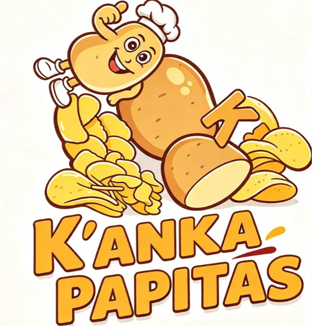
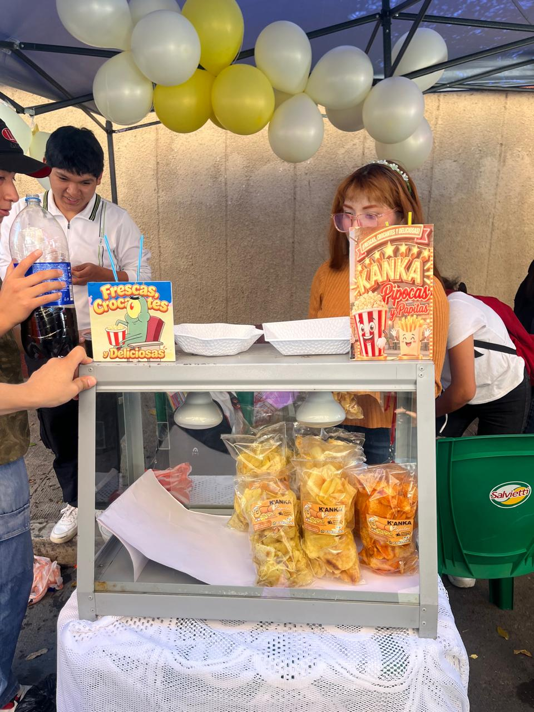
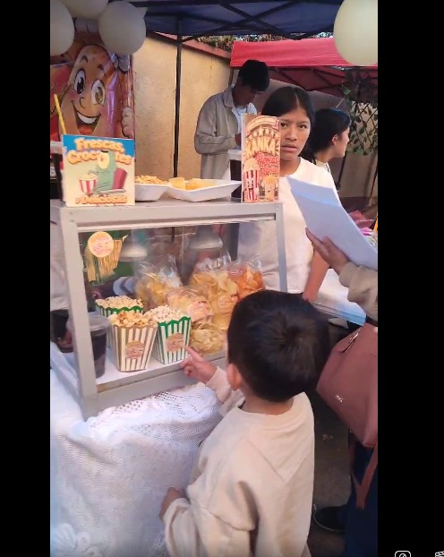
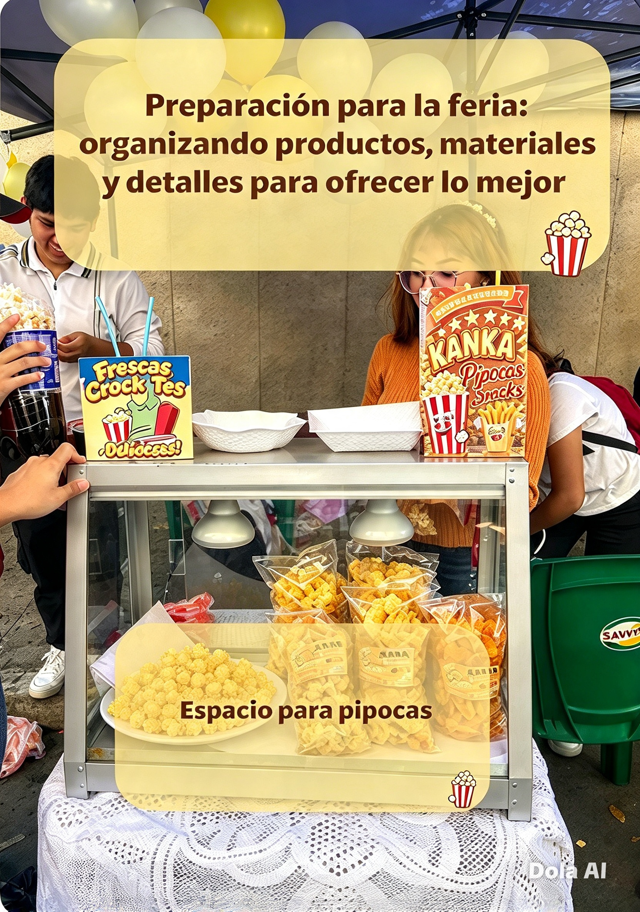
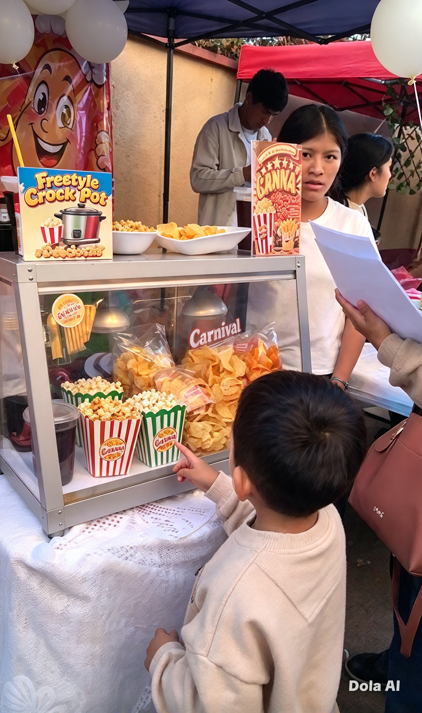

FEXPO ITSEC SUCRE 2026
Presentación de nuestro emprendimiento
Institución: Instituto Técnico Superior de Educación Comercial Sucre "ITSEC Sucre"
Carrera: Sistemas Informáticos
Materia:1roC Diseño y Programación WEB 1
Estudiante: Maroja Ticona Bautista
Emprendimiento: K"ANKA PAPITAS
Actividad: Feria de emprendimientos FEXPO ITSEC SUCRE
Gestión: 2026
Bienvenidos Este es el portal oficial de nuestro emprendimiento. Queremos invitarte a conocer a fondo nuestro proyecto a través de este recorrido web. En este sitio te presentamos desde las primeras ideas de nuestro negocio, pasando por los días de arduo esfuerzo y dedicación en la preparación para la feria,hasta culminar con el gran día de nuestra participación en la FEXPO ITSEC SUCRE. Gracias por visitarnos y por ser parte de esta importante experiencia para nosotros.
Nuestro emprendimiento
Qué es K"ANKA PAPITAS
Somos un emprendimiento joven y apasionado por los snacks y las bebidas. Creamos K"ANKA PAPITAS como una propuesta llena de sabor, y nuestra participación en la FEXPO ITSEC SUCRE fue la oportunidad perfecta para ponernos a prueba. Nuestro objetivo principal fue conectar con los visitantes a través de productos ideales para compartir aprender el arte de atender al cliente y adquirir una valiosa experiencia práctica en el mundo del comercio real.
¿Cómo decidimos realizar este emprendimiento?
Decidimos participar con K"ANKA PAPITAS porque queríamos ofrecer productos que las personas pudieran disfrutar durante la feria. Organizamos nuestra propuesta tomando en cuenta los productos, los precios, los materiales necesarios y la presentación del puesto de venta.
Productos y precios
Papitas normales
Presentaciones de dos tamaños.
Bs 7 y Bs 12
Papitas con orégano
Papitas saborizadas con orégano.
Bs 7 y Bs 12
Papitas semipicantes
Una opción con sabor semipicante.
Bs 7 y Bs 12
Pipocas
Producto para disfrutar como snack.
Bs 5
Coca-Cola
Soda servida en vaso desechable.
Bs 5
Objetivo del emprendimiento
Nuestro objetivo fue presentar una propuesta de venta, aprender sobre la organización de un pequeño negocio, atender a los visitantes y poner en práctica la responsabilidad, la comunicación y el trabajo en equipo.
Preparación para la FEXPO ITSEC SUCRE
Para participar en la FEXPO ITSEC SUCRE fue necesario organizar los productos, definir los precios y preparar los materiales que utilizaríamos en el puesto de venta. También tomamos en cuenta la presentación de los productos y la organización del espacio.
Qué preparamos
- Papitas normales, con orégano y semipicantes
- Pipocas para la venta
- Coca-Cola para servir en vasos desechables
- Materiales necesarios para organizar el puesto
- Distribución de los productos y sus precios
- Organización para atender a los visitantes
Fotografías de la preparación
En este espacio deben colocarse fotografías reales del estudiante preparando los productos, organizando los materiales o alistando las cosas para la feria.

Fotografía 1: Preparación del emprendimiento

Fotografía 2: Organización de los materiales.
Importante: reemplaza preparacion1.jpg y preparacion2.jpg por tus fotografías reales. No dejes imágenes que no existan en la carpeta del proyecto.
Nuestro stand en la FEXPO ITSEC SUCRE
K"ANKA PAPITAS en la feria
Nuestro stand fue el espacio donde presentamos y ofrecimos nuestros productos a los visitantes de la FEXPO ITSEC SUCRE. Organizamos las papitas, las pipocas y las bebidas para que las personas pudieran conocer nuestra propuesta.
Fotografías del stand
Fotografía 1: Stand del emprendimiento.

Fotografía 2: Otra vista del stand

Fotografía 3: Estudiante en el stand.
Video de presentación del emprendimiento
En el siguiente video se debe presentar K"ANKA PAPITAS, explicar brevemente qué productos ofrecemos y mostrar nuestra participación en la feria. La duración debe ser de un máximo de 20 segundos.
Conclusión
Participar en la FEXPO ITSEC SUCRE con nuestro emprendimiento K"ANKA PAPITAS fue una experiencia muy valiosa. Nos permitió transformar una idea en algo real, aprendiendo paso a paso cómo organizar un pequeño negocio, desde la preparación de los productos hasta la atención directa a cada visitante. Pudimos poner en práctica la responsabilidad, el trabajo en equipo y la amabilidad, valores fundamentales para cualquier emprendimiento. Estamos muy satisfechos con lo logrado y agradecidos por esta oportunidad, que nos motiva a seguir esforzándonos y mejorando.